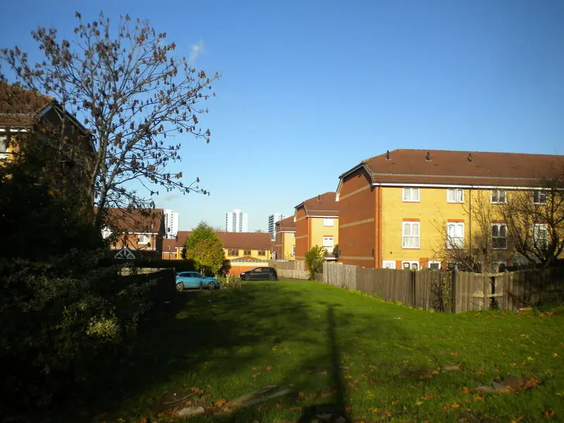

Recent case
- Salop Road, Oldbury, July 2026. Birmingham Mail reported around 200 plants, valued at roughly £200,000, across several rooms of a house on a residential street. The electricity had been bypassed and nobody was at the property.
An empty house with a bypassed meter is a common pattern. It means the landlord may be the first person back inside after the police.
Sandwell's licensing rules
Sandwell has a borough-wide additional HMO licensing scheme for properties let to three or four people from two or more households who share facilities. It runs until 30 September 2029. Mandatory licensing covers larger HMOs. Sandwell does not currently operate selective licensing for single-household lets. If your property is an HMO, it will need to meet licence conditions after the restoration.
The six towns
We cover the whole borough: Oldbury, West Bromwich, Smethwick, Tipton, Wednesbury and Rowley Regis, including Cradley Heath. Postcodes cross council boundaries here (for example, some B postcodes are Birmingham and some are Sandwell), so we match specialists on the actual postcode, not the town name.
If the property was empty
- Check your insurer's unoccupied property conditions. Many policies change after a property has been empty for 30 or 60 days.
- Secure the property as soon as it is released: new locks and, if needed, boarding.
- Photograph the meter position and any visible tampering before the supplier or network operator attends.
Postcodes that cross the boundary
Sandwell uses B, DY and WS postcodes. B66 and B67 (Smethwick), B68 and B69 (Oldbury), B70 and B71 (West Bromwich) and B64 and B65 (Cradley Heath and Rowley Regis) are all Sandwell. DY4 is Tipton. WS10 is shared with Walsall: Wednesbury is Sandwell, Darlaston is Walsall. Before you call the council, check the council tax bill.
HMOs across the borough
Sandwell's additional HMO licensing scheme covers the whole borough. If the house is shared by three or four people from two or more households, it needs a licence, and the restoration has to bring it back to licence standard: fire doors that close, working alarms, a safe electrical installation and no serious damp. Growers often take doors off and alarms down. Put them on the snag list.
When nobody was living there
If police found the grow in an empty house, as in Oldbury, you may not know when it started. Some practical steps:
- Check your policy's unoccupancy clause. Cover can change after a property has been empty for a set number of days.
- Look at the utility bills for when consumption changed. With a bypassed meter the recorded use may look normal, which is itself worth noting.
- Change the locks once you have lawful possession. Equipment left behind attracts break-ins.
Rear access and waste
Many streets in Smethwick, Oldbury and West Bromwich are terraces with rear alleys or shared entries. Getting waste out through the back is often quicker and less visible. Ask the specialist how they will do it, and whether they need a skip permit for the road.
Who to contact in Sandwell
- West Midlands Police: 101.
- 105 for the meter and supply.
- Sandwell Council: private housing and additional licensing (linked below).
- Stay Energy Safe to report suspected energy theft anonymously.
Questions landlords ask
Does Sandwell have selective licensing for single-household lets?
Not at the time of writing. Sandwell runs a borough-wide additional licensing scheme for smaller HMOs, alongside mandatory licensing for larger ones. Check Sandwell Council's page for the current position.
Do you cover Tipton and Wednesbury?
Yes. Tipton (DY4) and Wednesbury (WS10) are both in Sandwell. Give us the full postcode.
The house was empty when police found the grow. Will my insurer still pay?
It depends on your policy's unoccupancy and inspection conditions. Report the claim promptly and ask the insurer in writing what they need. Our insurance guide covers how these conditions have been applied.
What we can arrange in Sandwell
Guides for Sandwell landlords
Other areas: Birmingham, Sutton Coldfield, Solihull, Wolverhampton, Coventry, Walsall, Dudley, West Bromwich.